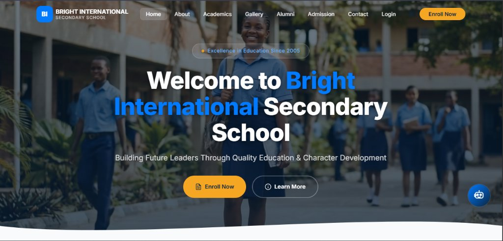

Bright International Secondary School Website
An institutional website designed to present Bright International Secondary School's academic programs, admissions path, campus life, and student/staff portal access in a clear, structured layout.

Purpose & Institutional Need
Secondary schools communicate with multiple distinct audiences—prospective parents reviewing admission criteria, current students looking for academic details, alumni, and staff members. Without a centralized, clear website, essential information such as enrollment steps and school sections becomes difficult to locate.
This website was built to give Bright International Secondary School a clear digital entry point that establishes trust immediately and organizes academic, admission, and community sections into one coherent navigation bar.
Interface Structure & Implementation
The landing view uses full-bleed campus photography paired with a high-contrast dark scrim so the main welcome heading, school motto ("Building Future Leaders Through Quality Education & Character Development"), and primary actions remain legible on first load.
Primary navigation organizes top-level school pathways—Home, About, Academics, Gallery, Alumni, Admission, Contact, and Login—alongside a dedicated "Enroll Now" call to action button in both the header and hero for direct prospective student inquiries.
Technical Stack
HTML5
Semantic header, navigation, hero landmark, and accessible button and link structure.
CSS3
Full-bleed background layering, contrast overlays, responsive typography, and action button styling.
JavaScript
Client-side interactive UI behavior and navigation support across viewports.